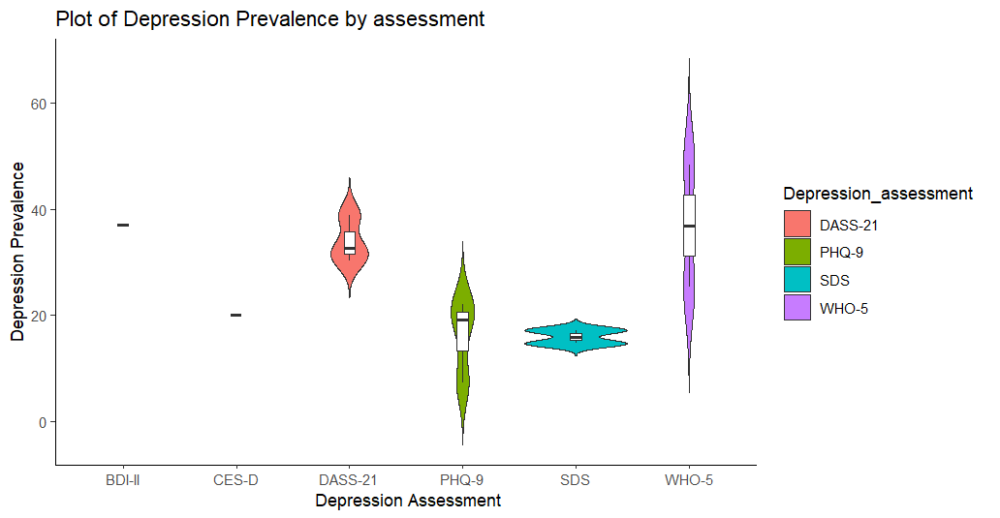

<!DOCTYPE html>
<html lang="en">
<head>
    <meta charset="UTF-8">
    <meta name="viewport" content="width=device-width, initial-scale=1.0">
    <title>Data Analytics</title>
    <link rel="stylesheet" href="style.css">
</head>
<body>
    
</body>
</html>
<u>
    <h2>INFM316: Data Analytics Using R and R Studio</h2></u>
    <h3>What is Data Analytics?</h3>
    <p>
        Data Analytics is the process of examining large data sets to uncover hidden patterns, correlations, trends, and other useful information. It involves applying various techniques and algorithms to interpret data and make informed business decisions. Data Analytics is used across various industries to optimize processes, improve efficiency, understand customer behavior, enhance decision-making, and gain a competitive advantage.
    <br><br>
    Overall, Data Analytics plays a crucial role in transforming raw data into valuable insights that can drive strategic decisions and improve organizational performance.
    <br><br>
    Key components of Data Analytics include:
<ul>
    <li><b>Data Collection:</b> Gathering structured and unstructured data from various sources such as databases, websites, sensors, etc</li>
    <li><b>Data Cleaning:</b> Preprocessing and cleaning the data to ensure accuracy and consistency, which involves handling missing data, removing duplicates, and correcting errors.</li>
    <li><b>Data Analysis:</b> Applying statistical and mathematical techniques to explore the data, identify patterns, correlations, and trends.</li>
    <li><b>Data Visualization:</b> Presenting the analyzed data visually through charts, graphs, and dashboards to facilitate understanding and decision-making.</li>    
    <li><b>Data Interpretation:</b> Drawing conclusions and actionable insights from the analyzed data to support business objectives and strategy.</li>
    <li><b>Predictive Analytics:</b> Using historical data to make predictions about future trends and outcomes using techniques such as machine learning and statistical modeling.</li>
</ul>

        
    </p>

<h3>Week 1: </h3>
<p>
    x = c(1.1, 1.3, 1.5, 1.8, 1.8, 1.8, 1.8, 1.9, 2.1, 2.4, 2.4, 2.7, 2.9, 2.9, 3, 3, 3, 3.1, 3.2, 3.5, 3.8, 3.9, 4, 4.1, 4.1, 4.3, 4.4, 4.4, 4.5, 4.5, 4.7, 4.9, 5, 5.3, 5.4, 5.5, 5.6, 5.7, 5.8, 5.9, 5.9, 6, 6.2, 6.3,
          6.5, 6.9, 7, 7.1, 7.4, 10.8)
    <br>
    table(x)
</p>
<p>
    Histogram of X graph: <a href="PDF/Week1.Rplot.pdf" target="_blank">hist(x)</a> <br>
   <br> Relative Frequency Histogram of X Graph: <a href="PDF/Week1.freqRplot.pdf" target="_blank"> hist(x, probability=TRUE, main='Relative frequency histogram of x') </a>
    <br>
    <br>Histogram of X using 6 classes: <a href="PDF/Week1.6classesRplot.pdf" target="_blank">hist(x, breaks=6, main='Histogram of x using 6 classes')</a>
    <br>
    <br>Normal QQ Plot: <a href="PDF/Week1QQplot.pdf" target="_blank">qqnorm(x)</a>
    <br>
    <br>QQ Line Plot:  <a href="PDF/Week1.QQLineplot.pdf" target="_blank">qqline(x)</a>
    <br>
</p>
<h3>Week 2:</h3>
<a href="PDF/annotated-C_Homework_2.png.pdf" target="_blank">R Code for Covid_Depression_Case_Study</a><br>
<a href="PDF/annotated-CHomework_2.txt.pdf" target="_blank">Spreadsheet</a><br><br>
<p>
    The global healthcare community continues to grapple with the multifaceted challenges
    presented by the ongoing COVID-19 pandemic. This virus was caused by the severe acute
    respiratory syndrome coronavirus 2 (SARS-CoV-2). As knowledge about the virus expands, it's
    becoming evident that COVID-19 doesn't just affect people during the acute phase of illness.
    Emerging data suggests that some individuals experience ongoing symptoms and long-term
    complications after recovering from the initial infection, leading to what is now recognized as
    post-acute COVID-19 syndrome.
</p>
<p><b>References</b></p>
<p>
    Nalbandian, A., Sehgal, K., Gupta, A., Madhavan, M. V., McGroder, C., Stevens, J. S., Cook, J.
    R., Nordvig, A. S., Shalev, D., Sehrawat, T. S., Ahluwalia, N., Bikdeli, B., Dietz, D., Der-
    Nigoghossian, C., Liyanage-Don, N., Rosner, G. F., Bernstein, E. J., Mohan, S., Beckley,
    A. A., ... Wan, E. Y. (2021, March 22). Post-acute COVID-19 syndrome. Nature News.
    <a href="https://www.nature.com/articles/s41591-021-01283-z">https://www.nature.com/articles/s41591-021-01283-z</a>
</p>

<h3>Week 3:</h3>
<a href="PDF/GGPlot2.pdf" target="_blank">GG Plot </a> <br>
GGPlot 2 library used <br> <br>
<b>Data Manipulations Using R</b> 
<ul>
    <li>Imported data from an Excel file named Covid_Depression_Case_Study.xlsx.</li>
    <li>Calculated female counts from female percentage and sample size.</li>
    <li>Rounded female counts to the nearest integer.</li>
    <li>Derived male counts by subtracting female counts from sample size.</li>
    <li>Renamed the fourth column to "Sample_Size" for clarity.</li>
</ul>
<b>Data Visualization:</b>
<ul>
    <li>Created a scatter plot using ggplot2 library.</li>
    <li>Plotted female and male counts against the "Study" variable.</li>
    <li>Customized colors for females (dark red) and males (steel blue).</li>
    <li>Adjusted point sizes.</li>
</ul>
<b>Interpretation of Scatterplot Output:</b>
<ul>
    <li>Scatterplot shows distribution of females and males across different studies.</li>
    <li>Consistent patterns or trends may suggest a relationship between the study and gender distribution.</li>
    <li>Outliers or unusual patterns can be identified.</li>
    <li>Relative proportions of genders across studies are comparable.</li>
    <li>Insights gained can aid in further analysis or decision-making regarding the studies.</li>
</ul>

<h3>Week 4:</h3>
<p>Use the following table of perceived prevalence of depression in Vietnam. <br>
    Import the excel table into R-Studio and plot the Perceived Depression Prevalence by location, profession and gender. <br>
 <br> 

    <a href="PDF/annotated-DA.Week4.pdf" target="_blank">Graph by location</a> <br> <br>
    <a href="PDF/annotated-PR.Week4.pdf" target="_blank">Graph by profession</a> <br> <br>
    <a href="PDF/annotated-GN.Week4.pdf" target="_blank">Graph by gender</a>
</p>

<h3>Week 5:</h3>
<p><B>Write a paragraph for your case study paper.</B> <br></p>
    <p>
        The global healthcare community continues to grapple with the multifaceted challenges
presented by the ongoing COVID-19 pandemic. This virus was caused by the severe acute
respiratory syndrome coronavirus 2 (SARS-CoV-2). As knowledge about the virus expands, it's
becoming evident that COVID-19 doesn't just affect people during the acute phase of illness.
Emerging data suggests that some individuals experience ongoing symptoms and long-term
complications after recovering from the initial infection, leading to what is now recognized as
post-acute COVID-19 syndrome. <br>
<br><b>References</b> <br>

Nalbandian, A., Sehgal, K., Gupta, A., Madhavan, M. V., McGroder, C., Stevens, J. S., Cook, J.
R., Nordvig, A. S., Shalev, D., Sehrawat, T. S., Ahluwalia, N., Bikdeli, B., Dietz, D., Der-
Nigoghossian, C., Liyanage-Don, N., Rosner, G. F., Bernstein, E. J., Mohan, S., Beckley,
A. A., ... Wan, E. Y. (2021, March 22). Post-acute COVID-19 syndrome. Nature News.
<a href="https://www.nature.com/articles/s41591-021-01283-z">https://www.nature.com/articles/s41591-021-01283-z</a> <br>

    </p>
<h3>Week 6:</h3>
<p><b>Create a Violin Plot of the Depression Prevalence by Depression Assessment.</b>
<br> </p>




<h3>Week 7:</h3>
<p>
    <b>
        Identify limitations of existing epidemiologic studies of Covid 19 and depression correlation. <br>
        Examine data from the assessments and interprets the findings. <br>
        Explore literature to compare your findings.
    </b><br>
</p>
<p>
    &nbsp;&nbsp;&nbsp;&nbsp;&nbsp;&nbsp;&nbsp;&nbsp;&nbsp;    The COVID-19 pandemic, caused by the coronavirus, has affected the world on a large
scale. It's not just about physical health; it's also causing challenges for mental health. People are
worried about getting sick, not having a vaccine or treatment, and the economic problems like
job loss and shortages caused by lockdowns. These worries can seriously affect mental well-
being. It's important for researchers and healthcare workers to pay attention to these mental
health issues alongside the physical ones. The mental health impact of COVID-19 on those who
test positive is a big concern worldwide. Even though we're still learning about how COVID-19
affects mental health, past studies show that outbreaks like this can really affect people's mental
well-being. <br>
&nbsp;&nbsp;&nbsp;&nbsp;&nbsp;&nbsp;&nbsp;&nbsp;&nbsp; Those who get COVID-19 might feel anxious, scared, and uncertain about their treatment
and how they'll get better. There are many other aspects from the pandemic that can make this
worse, like being isolated after diagnosis, being in the hospital for a long time, and not having
enough support from friends and family. There's growing evidence that people with COVID-19
might have depression, anxiety, and even thoughts of suicide. So, it's really important for us to
understand how this pandemic is affecting mental health, both for individuals and for society as a
whole. <br>
&nbsp;&nbsp;&nbsp;&nbsp;&nbsp;&nbsp;&nbsp;&nbsp;&nbsp; Many of the studies looking at how COVID-19 relates to depression have some
limitations. A lot of them use a type of research called cross-sectional design, which means they
gather data from a group of people at just one point in time. This gives us a picture of how
COVID-19 and depression might be linked at that moment, but it does not show us if one causes
the other or how things change over time. Also, these studies often rely on people reporting their
own feelings, or they focus on specific groups like healthcare workers or COVID-19 patients.
This could make the results a bit skewed because people with severe depression might not be
included, and those who can't get healthcare might not be represented well either. <br>
&nbsp;&nbsp;&nbsp;&nbsp;&nbsp;&nbsp;&nbsp;&nbsp;&nbsp; Epidemiologic studies may not fully account for confounding variables, such as
socioeconomic status, pre-existing mental health conditions, or access to social support. Failing
to control these factors could lead to inaccurate associations between COVID-19 and depression.
Variability in the assessment tools used to measure depression and COVID-19 symptoms across
studies can affect the reliability and validity of the findings. Additionally, differences in cultural
perceptions of mental health and reporting bias may influence the results. <br>
&nbsp;&nbsp;&nbsp;&nbsp;&nbsp;&nbsp;&nbsp;&nbsp;&nbsp; Interpreting the findings from these studies requires careful consideration of these
limitations. While some studies suggest a significant association between COVID-19 and
depression, the strength and direction of this relationship may vary depending on the study
design, population characteristics, and control for confounding variables. Comparing these
findings with existing literature can provide valuable insights. A review of relevant studies may
reveal consistent patterns or discrepancies in the evidence, helping to identify areas for further
research or interventions. Additionally, synthesizing findings from diverse sources can offer a
more comprehensive understanding of the complex interplay between COVID-19 and
depression, informing public health strategies and clinical practice.
<br><br> <b>References</b> <br>
Hossain, M. M., Tasnim, S., Sultana, A., Faizah, F., Mazumder, H., Zou, L., McKyer, E. L. J.,
Ahmed, H. U., & Ma, P. (2020, June 23). Epidemiology of mental health problems in
COVID-19: A Review. F1000Research.
<a href="https://www.ncbi.nlm.nih.gov/pmc/articles/PMC7549174/">https://www.ncbi.nlm.nih.gov/pmc/articles/PMC7549174/</a>

</p>
<h3>Week 8:</h3>

<p><a href="PDF/316.FinalStudy.pdf">Final Case Study Paper</a></p>
<br>